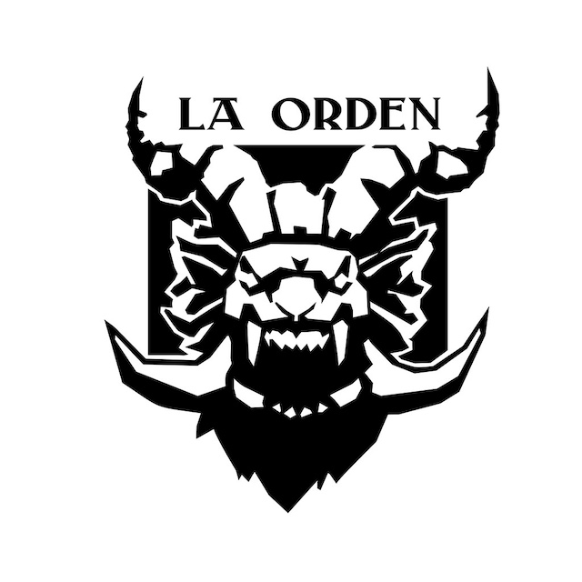

I Concurso de Pintura de Miniaturas · La Orden
Solo puedes votar una vez. No podrás cambiar tu voto.
Te mandamos un código de un solo uso para comprobar que la dirección es tuya. La organización ve las direcciones durante el concurso y las borra el 16 de noviembre. Más información
¿No te llega? Mira en la carpeta de spam. Pedir otro código